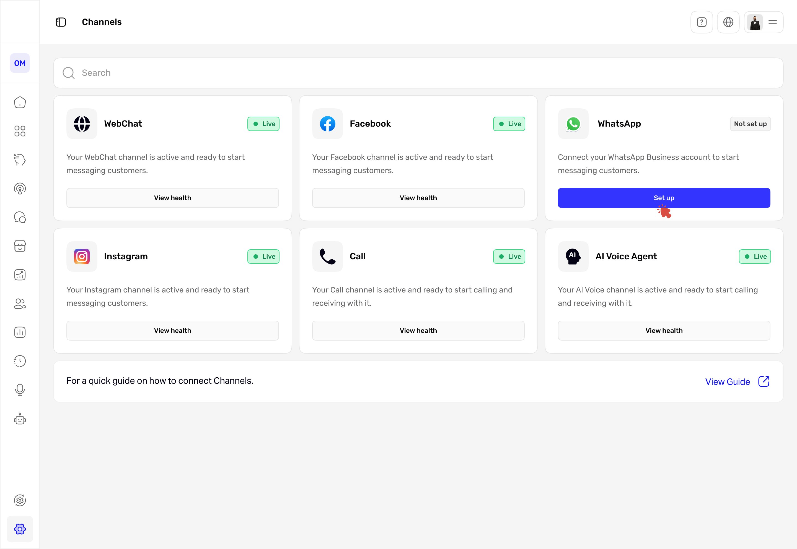
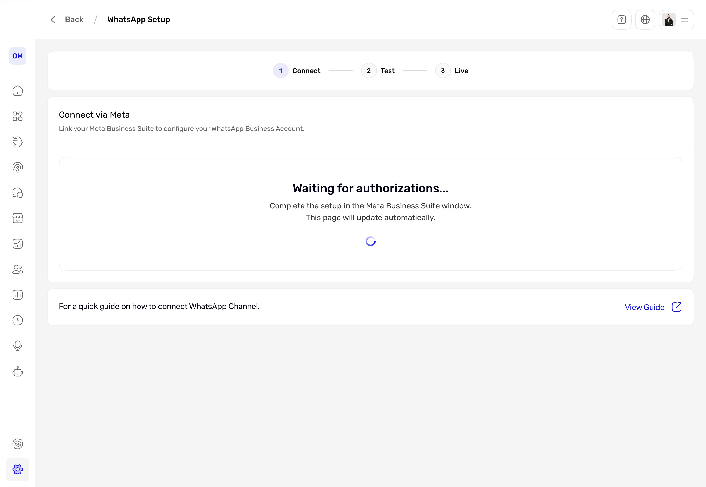
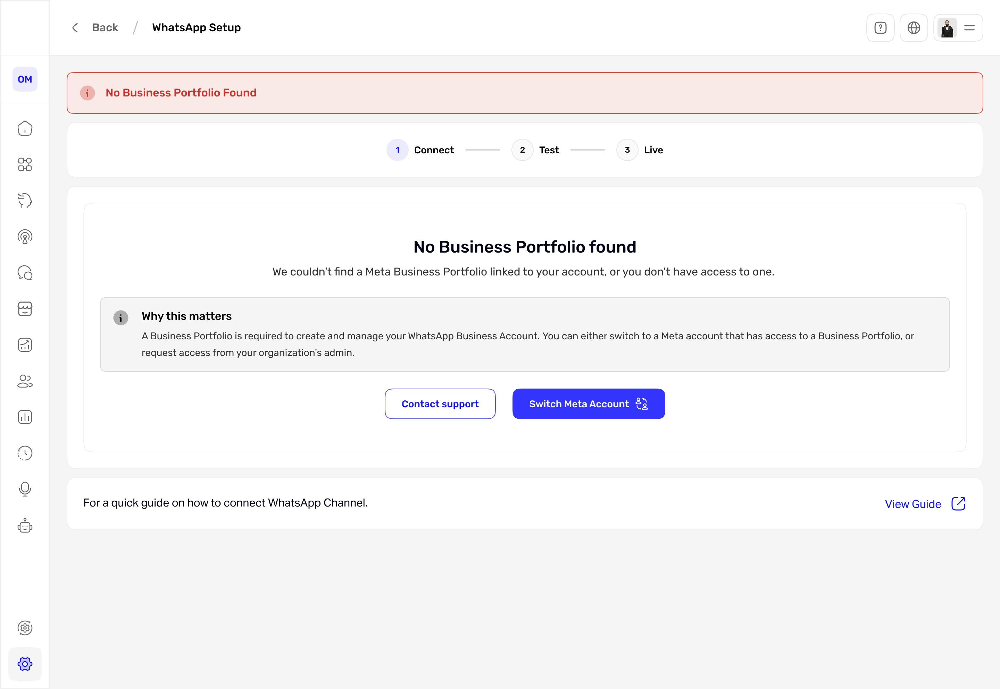
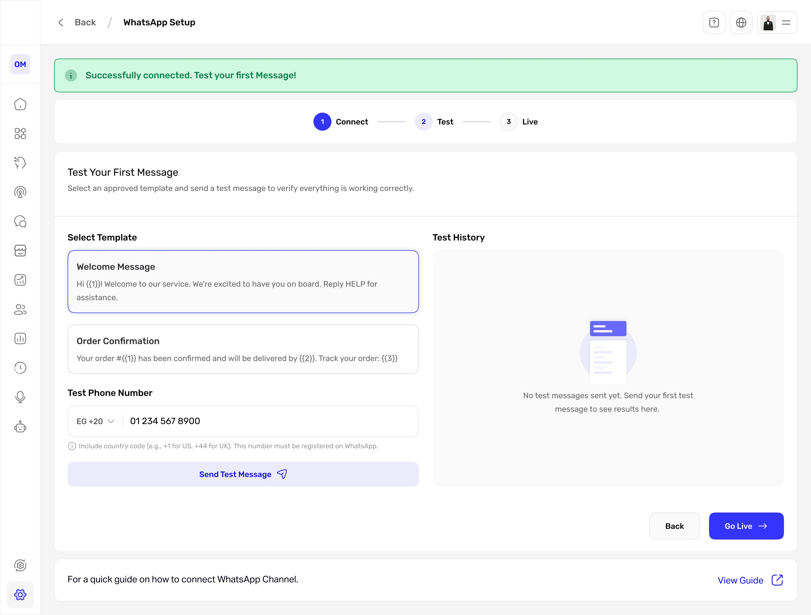
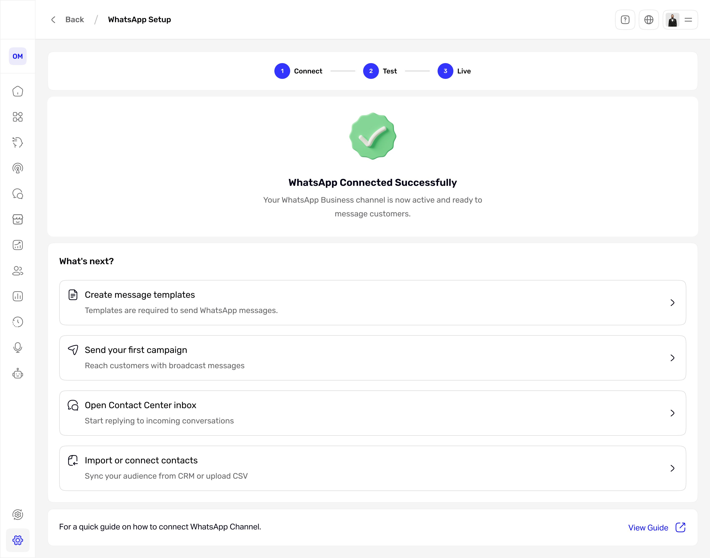
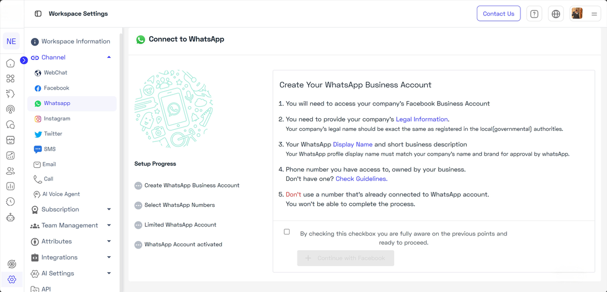

Channel setup that guides itself.
Channels lived only in a side menu, and connecting WhatsApp meant a wall of requirements with no clear steps. I rebuilt it into a single channels overview and a guided three-step setup that shows progress, lets you test before going live, and recovers cleanly when a connection fails.

Connecting a channel shouldn't feel like guesswork.
The platform lets businesses run customer conversations across many channels, and the operators who set those channels up are often non-technical. But the channels themselves were buried in a side menu, and the highest-value one, WhatsApp, was the hardest to connect: a single screen of requirements, a long checkbox, and no sense of how many steps were left. People started the setup and got stuck. And because WhatsApp is the channel businesses lean on most, each stalled setup is one that never starts messaging customers, so the product goal was simple: get more businesses connected on their own, without support stepping in. As the solo product designer, working with a PM and engineers, I owned the audit, the flows, and the final UI for both the channels overview and the WhatsApp setup.
I scored the old setup against usability heuristics.
I evaluated the original Connect to WhatsApp screen against Nielsen's usability heuristics, focused on the moment a user first tries to connect. Here is the original screen with the problems marked.
The original Connect to WhatsApp screen. One screen carried every requirement, a long confirmation checkbox, and no sense of steps. The four markers map to the findings below.
The issues grouped into four clear findings, each tied to a heuristic and rated by severity:
| Finding | Heuristic broken | Severity |
|---|---|---|
| No clear progress through the setup (no stepper) | Visibility of system status | High |
| First screen is a wall of requirements text | Aesthetic and minimalist design | Medium |
| Confirmation checkbox is long and hard to parse | Match between system and the real world | Medium |
| Help sits away from where users get stuck | Help and documentation | Low |
The blocker wasn't WhatsApp. It was a setup with no shape.
Every finding pointed the same way. People could not see where they were, what was left, or what to do when something failed, and there was no overview of channels to anchor them. The fix was not more explanation. It was structure: a clear path, visible progress, and an honest way to handle failure.
Setup didn't need more words. It needed a shape.
Four decisions that gave setup a shape.
Scroll to explore the full flow
The full connect flow, in four phases: Connect, Test, Live, and an optional Setup. Both decisions route a failure to a clear reason and a retry, the test-fix loop is non-blocking, and going live opens the primary CTAs.
A single channels overview
Channels used to live only in the side menu, with no place to see what was connected. Now one page shows every channel, its live status, and one clear action each, so people can tell at a glance what is connected and what still needs setup, instead of hunting through the menu.
A guided three-step flow
A persistent stepper, Connect, Test, Live, replaces the wall of text. People always see where they are and what is left. I considered keeping it a single screen with inline validation, but only a stepper made progress and recovery legible across the whole setup.
Honest failure and recovery
The connect step can fail in several ways, a missing Meta Business Portfolio being one. Instead of a dead end, every failure gets the same treatment: a clear reason, a recovery action, and contextual support.
Test before going live
A dedicated test step sends a real message from an approved template, so the first customer message is confirmed working before the channel goes live.
What it looks like

Step 1, Connect. A clear waiting state while Meta authorizes, with the stepper always visible. The page updates on its own.

When it fails, it recovers. This is one of several failure states, here a missing Meta Business Portfolio. Each gives a clear reason, a recovery action (Switch Meta Account), and support, instead of a dead end.

Step 2, Test. Send a real test message from an approved template before going live, so the first message is never a surprise.

Step 3, Live. A clear finish, then four real next actions instead of a blank screen.
The shift, side by side.
Channels lived in the menu
No channels page. You opened each channel from the side menu, with no single place to see what was connected or whether it was healthy.
How I would measure success
| Metric | Target | Why it matters |
|---|---|---|
| Setup completion (started to live) | ≥ 70% | Adoption |
| Time to connect | under 5 min | Efficiency |
| Recovery after an error | ≥ 60% | Resilience |
| Drop-off at the connect step | ≤ 15% | Friction |
| Setup satisfaction | ≥ 4 / 5 | Experience |
What changed
- Shipped and live in production, replacing the old setup screen.
- Channels moved from a hidden menu item to one overview with clear status.
- Connecting WhatsApp went from a wall of text to a guided three-step flow with visible progress.
- Failures now show a reason and a recovery action instead of a dead end.
- A test step confirms the channel works before it goes live.
Setup stopped being a wall to climb and became a path to follow.
If I did it again: I would sit with real users who hit Meta failures to pressure-test the recovery copy, and instrument the funnel to confirm the completion and recovery targets hold. I would also test whether returning users want to skip the test step.
Guided steps vs. speed. The test step adds one step before going live, which I accepted because it removes the fear of a wrong first message. For returning users I would offer a skip.